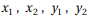

を考える。と
東京大学 2014年 理科 第3問
問題
uを実数とする。座標平面上の2つの放物線
を考える。と が共有点をもつようなuの値の範囲は、ある実数a,bにより、a≤u≤bと表される。
が共有点をもつようなuの値の範囲は、ある実数a,bにより、a≤u≤bと表される。
(1) a,bの値を求めよ。
(2) uがa≤u≤bをみたすとき、との共有点をとする。ただし、共有点が1点のみのときは、とは一致し、ともにその共有点を表すとする。
をuの式で表せ。
(3) (2)で得られるuの式をf(u)とする。定積分
を求めよ。
解答
(1)
したがって、
(2)
具体的なの値を求める。
よって求める値は
(3)
補足・感想
(2)はゴリ押し計算。